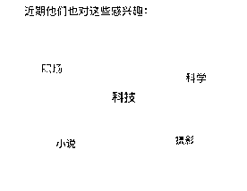

来源：https://y3my0b87ql.feishu.cn/docx/VycjdfClkoCLTCxJqULcHFoZnac
在公众号领域，看到很多大佬分享各种玩高阶、升级等玩法，也有佬在分享自己的感悟，在这些精华贴下面还是能看到，好多像我一样的小白，有很多的疑问，很多担忧。比如，你是不是也有下面这些问题、焦虑。
…………
今年加入生财之后，发现这个公众号这个赛道渠道，很适合自己，不需要投入太多的时间，就能有不错正反馈。最大的反馈就是，收入多起来了，最开始做的时候，从失败到成功变现，生财新人成功变现四位数的航海收获，现在每天在 2k 左右，已经维持一段时间了。
做了什么？
这个大概率要归功于，一个鹅厂的算法推荐工程师，给我指点了葵花宝典，相当于出题人解释出题解法思路。今天就把这些规则，结合自己的数据分析结论，分享给大家，祝大家一起生财有术。
9月份的时候，公众号推出一个功能，就是群发和发布功能合并为「发表」。这个对于普通人来说，是一个王炸的升级，你写的文字，只要有有一小部分感兴趣，能就可能获得推荐的机会。
1、发表内容时，可选择是否开启“群发通知”；
2、开启“群发通知”的发表方式，与原群发能力一致，发表后的内容将在用户的订阅号消息列表和公众号主页展示，通知次数与原群发次数一致；
3、未开启群发通知的发表方式，与原发布能力一致，无次数限制，发表后的内容将在公众号主页展示，且有可能获得平台推荐；
可以看下最近一段时间的阅读量推荐，97% 来自推荐，只要文章有内容、能产生共鸣就有机会被推荐。
有了这些推荐流量，相当于在平台天天捡钱呀。
首先得感谢生财的精华帖子，从里面学到了很多的赚钱技巧和思路，还有手把手教你赚钱的教程。不过还是运气好，没有生财，哪里有机会捡钱呀？
今天就来说说推荐，如何让自己的文章有更多的机会被平台推荐。
与其勤奋的日更，自我陶醉，不如迎合算法推荐、平台规则。
我是一个程序员，但不是推荐算法的工程师，咨询了下专门做推荐算法的，是不是腾讯员工，我就不说了，保密，不然南山法院见面了。
重要：排序模型+赛马机制。
先来说下理论知识，科普时间，可跳过，不影响后面的阅读。
排序模型：
在一个推荐系统中，系统计算用户最近一段时间的累计值，这个累计值有两个关键要素，一个是统计时间周期，又称为时间窗口，一个是用户标签。时间周期支持随着时间变化，那这个时间窗口就是动态变化的，根据动态变化的情况会有许多细分的窗口类型，用以解决不同场景的问题，推荐系统模型来计算读者和公众号+文章的匹配度，专业术语叫排序模型。这个算法适用于最近一段时间，比如最近 x 时/天/周/月/年。
最近一段时间的实时阅读量、点击率、点赞率等等
最近一段时间的实时新增用户数、点击率、在看率、完读率等等
……
赛马机制：
下面是通用的赛马机制框架，简单的说就是先将文章推荐给小部分人群，收集这部分数据的表现情况，再将表现好的文章分发到更大的范围，以此类推，内容过硬，很快达到10W+。
……
用人话说，给合适的读者，推荐合适的文章。
先说说，那些入口的会对文章的有较大的权重影响。下面具体到公众号我们看到有几个途径推荐：
标签就是和正在看的文章有相同的之处，社交就是有好友阅读过这样的文章。
比如图片是mid 、sd生成的，博流量的那么就放这里，很有可能就会爆。
有这么多的入口，不管你是人工写、还是AI写作，只要你的文章足够的精彩、有趣、有内容，一定会被推荐的。
「看一看」这个地方是重点流量池。文章火不火，取决于赛马机制里面，第一波给你的流量，你没有跑过同类文章。
这里都是推荐的文章，那标题和封面特别重要。酒香还是怕巷子深，好文还是怕，标题不行。
标题既要吸引眼球，又要概括文章主要内容和亮点。
例如，对于一篇介绍社交软件的文章，标题可以是“这款社交软件火了，3 大功能让你爱不释手”,既吸睛又概括了文章要表达的观点。
不要用与内容无关的标题误导读者，否则点击进去，发现文不对题，完读率低，导致没有推荐量。
是时候亮出，我收藏已久的这种图了。
特别是封面图要视觉吸引人，同时突出文章的核心要点。
例如，一篇详解手机拍照技巧的文章，封面可以用手机拍摄的精美风景照为背景，前置一个设计感强的文本框，写上“手机拍照 10 大技巧”,突出文章重点。
在设计标题和封面时，要注意避免使用夸大其词的标题，不要使用违规词语。另外要使用原创或者就是新闻热点里面的截图即可。
或免版税的图片，不要直接复制或截取他人作品，特别是视觉中国的图片，以免触犯版权。
不要违规， 不要违规，不要违规。不要写一些敏感的话题，大家都懂。
原创度是文章的一个重要属性，有了这个属性，和别的文章就不是同一个起跑线。
现在有 AI 加持，生财大佬们，提供了很多这样的提示词，只要提示词给的好，一篇文章分分搞定，原创度99.99%。
对于新账号来说，原创度越高越好，这样才能被推荐的概率越大。
还有一个重复的自己的爆款文章，可以重复发么？
做视频的时候，可以发布自己曾经火的视频、重复发，一帧不改的发，都可以。
但是，对于文字来说，尽量不要一字不改的发，要发还是修改下，去重，然后在发布。 不然第一阶段的赛马机制就被淘汰了。
排序算法有一个重要术语时间窗口期，就是这个时间段内的权重高，推荐的概率就越大。
对于排序推荐，文章的活跃度很重要，保持一定的内容发布频率以及较高的发文质量，不仅是账号吸引新用户，活跃老用户的核心手段，也是搜一搜对账号质量进行评估的重要参考。
现在每天仍然还可以多发，建议数量在2~3篇即可。
内容才是硬通货，不是人人都是莫言，余华。不过现在通过AI加持，轻松写出超越80%人的文章，能保障自己的文章有趣、有味、有共鸣，自然点赞/完读就高了，在赛马机制里面，直接保送。
实际微信一个超级app，每日活跃的用户上亿，每一个细分的领域都有可观的流量。
上来就给人上价值，要教育读者一番，估计读者很难受，pia的一下就关了。
这个有趣就抄哪些10w+的文章，丢给 AI，给你文章的思路是啥。
新手起号的时候，前期文章字数控制在 500-1000 字，文章不要太长，容易让用户失去耐心。字数适中可以提高完读率，用户看完一篇顺畅的文章会有成就感，更愿意点赞，是不？
还有好多作者，突然有一篇进入了流量池，阅读量一路猛涨，但是过一段时间就停了，再也没有进入流量池了。
这个应该就是写的内容，不垂直，导致内容分散在很多领域，应该多写自己公众号标签的内容。
每一周公众号助手会推送自己的每周的创作者周报，里面可以看到自己的公众号标签是什么。

可以观察每周创作者数据报告，看哪些类型文章更吸引用户，然后针对这些话题进一步创作。
这样内容更符合用户兴趣，也更容易留存用户，同时让自己在这个领域聚焦。
还记得通篇都在讲的，赛马机制。
要抓住发布文章之后，时间窗口期内的，黄金时间（大概是3~7小时），在第一阶段内赛马成功。
比如半夜发文章，对于自己的干扰赛马机制的数据太少，早点发文，可以增加朋友圈、看一看推荐一波朋友社交流量，增加第一阶段的数据。
好多人觉得发布时间，没有太多的用处，这一点相对重要。在时间窗口期内，赛马机制里面文章靠前，就会第二次推荐。
那最好的发布时间是多少？之前我测试过自己的优势，就是分析。我用我的大数据告诉你，其他地方也很难看到这么似乎没有价值东西吧。
可以看到数据在20点迎来最高峰，在13点左右的时候有一个异常值，暑假突增。
我总结的是发布时间最好是 13:00 左右发布 ，其次，如果没有写好，在20:00之前也是可以发表的。好的内容经过第一次推荐，然后就会得到第二次推荐。
这个很简单，做新闻报道的， 这个途径很难用到，实际就是微信搜一搜。
上面提到了， 有些公众号的文章，普遍文章的阅 100 以内，突然有一篇的阅读量很高，这个说明就是搜索，或者是推荐过来的。
比如下面这个文章的，前后的阅读数，都是 100 附近，但是有一篇文章在 4 位数，这是一个异常值。
对于搜索流量，这个流量适合用于精准的，二次转化的流量，关键要点有：
提供原创稀缺的内容，使文章易于被搜索和理解，有价值、有共鸣。
原创稀缺的内容更容易吸引用户，也更有可能成为用户的知识盲点。例如对某个行业的深度剖析、独家数据报告等都是非常好的原创题材。这类内容往往能给用户“我x， 原来还有这种操作”的感觉，能产生共鸣。
相当于SEO里面的长尾词。
合集可以结合搜索来做优化。提高号的权重，同时增加系列文章的阅读量。
合集里面有一篇文章火了，可以带动其他文章也跟着火起来。
甚至是后面刚写的文章，就自带推荐流量。
之前这个地方叫做「话题」，现在是「合集」，不是原创的也可以加入合集里面。
目前合集功能在手机微信上有两个入口：文章的开头和末尾。
点击打开合集后，用户还可以订阅合集，这样合集中有了新内容会，用户也会第一时间查看到。
如何使用合集提高自己的阅读量？
然后直接用可以了。
标题没有起好，封面也没有做好，怎么办？
文章太长，可以通过分享和划线，让其他用户也跟着一起划线，这样更利于在赛马机制里面，走得更远。
划线之后的样子是这样的，
划线功能，很少人用到，但是划线和点赞有点类似。会推送到公众号首页，这样又是一次推荐呀。
文章中哪些句子能引发读者共鸣，让读者产生感觉，这些句子就很有可能成为金句。例如一些活用普通事物的创意点子，能让人眼前一亮的感叹句等。可以把这些句子通过划线功能分享到朋友圈，带动读者转发传播。
看有合适的金句，就收藏下，下次自己写的时候，就好好利用起来，积累素材。
再来看看文章开头提到几个问题：
几年前就有人说，公众号已经是红海了，别再进来了。这不是废话么？蛋糕这有这么多，你进来就多一个竞争者。
赚钱的人，才不想你进来。自由生财的大佬们，才是无私的分享。记得有一次看到亦仁老板的大意是说：生财就是为了让大家赚到钱。公众号这么精华贴，这个赛道简单，就是为了让我这样的新手下场，干！
百家号，我做过一段时间，只能说我自己无才，流量太便宜了，爆款也很难出。
一个 10w+阅读的百家号，才几十块钱。
公众号是实打实的真人流量。
我自己是俗人，拍视频没有学过，拍出来就是一坨屎，根本没法看。
自己都不能感动，还别说用户了。
文字相对简单，用 AI 几分钟就出文，我天天加班到很晚，都可以做到日更几个号，你也可以的。
…………
不要再站在场边围观了，搂起袖子，下场干吧。
了解了这些规则和机制，这和我们读书时期考试， 出题人提前给我们补习，还能考不好？
好了，感谢大家的阅读，赶紧把这些技巧用起来吧。希望大家持续出爆文，一起生财有术。